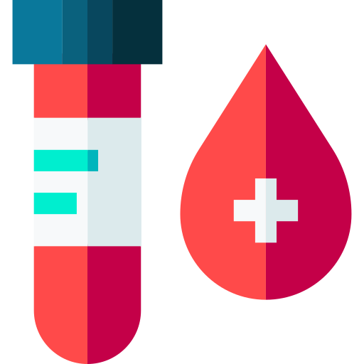

<ion-content>


  <ion-header>
    <ion-toolbar>
      <ion-title style="text-align: center;" >Tahlil Sonuçlarım</ion-title>
      <!-- <ion-button style="position: absolute; margin-top: -20px;" (click)="degis()" >degistir</ion-button> -->
  
    </ion-toolbar>
  </ion-header>


  <ion-refresher slot="fixed" (ionRefresh)="yenile($event)">
    <ion-refresher-content
      pullingIcon="arrow-down-outline"
      pullingText="Sayfayı yenilemek için çekin!"
      refreshingSpinner="crescent"
      refreshingText="Sayfa yenileniyor...">
    </ion-refresher-content>
  </ion-refresher>


  <!-- Tahlil sonucu varsa -->
  <span *ngIf="tahlil_sonuc">
  <ion-card *ngFor="let item of sonuclar" >
    <ion-card-content  >
      <div>
              
        <ion-title style="float: right; font-size: 15px;margin-top: -9px;display: block; "  >{{item.TARIH}}</ion-title>
         
     

       
         
         <ion-label style="position: absolute; margin-top: 8px; margin-left: 5px;"  >{{item.HASTANE}}</ion-label>

<br>
<br>
    <span>

         
 
      <ion-label style="position: absolute; margin-top: 10px; margin-left: 5px;" >{{item.TAHLIL}}</ion-label>
  
    </span>
    


 
    </div>

    </ion-card-content>
  </ion-card>
</span>

  <!-- tahlil sonucu yoksa -->
  <span *ngIf="!tahlil_sonuc">
    
    <ion-label style="font-size: 25px; text-align: center; display: block;" >Tahlil sonucunuz Bulunmamaktadır!</ion-label>
  </span>


</ion-content>
